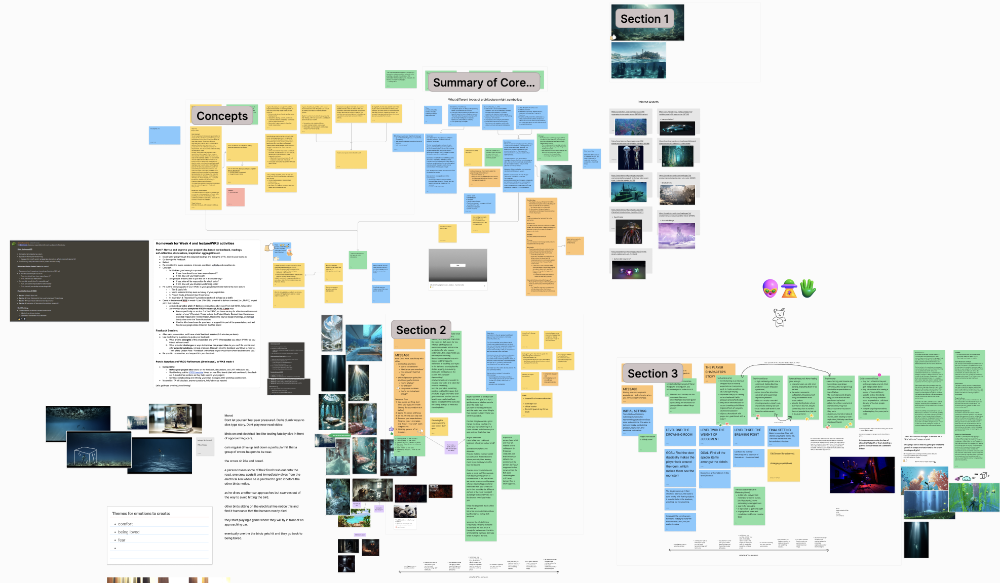
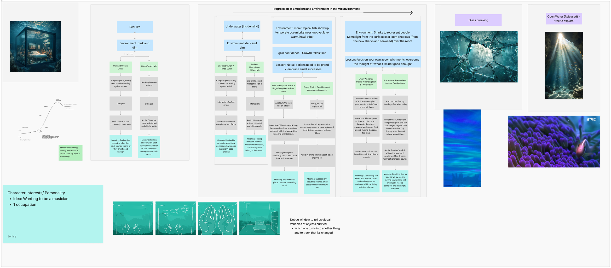
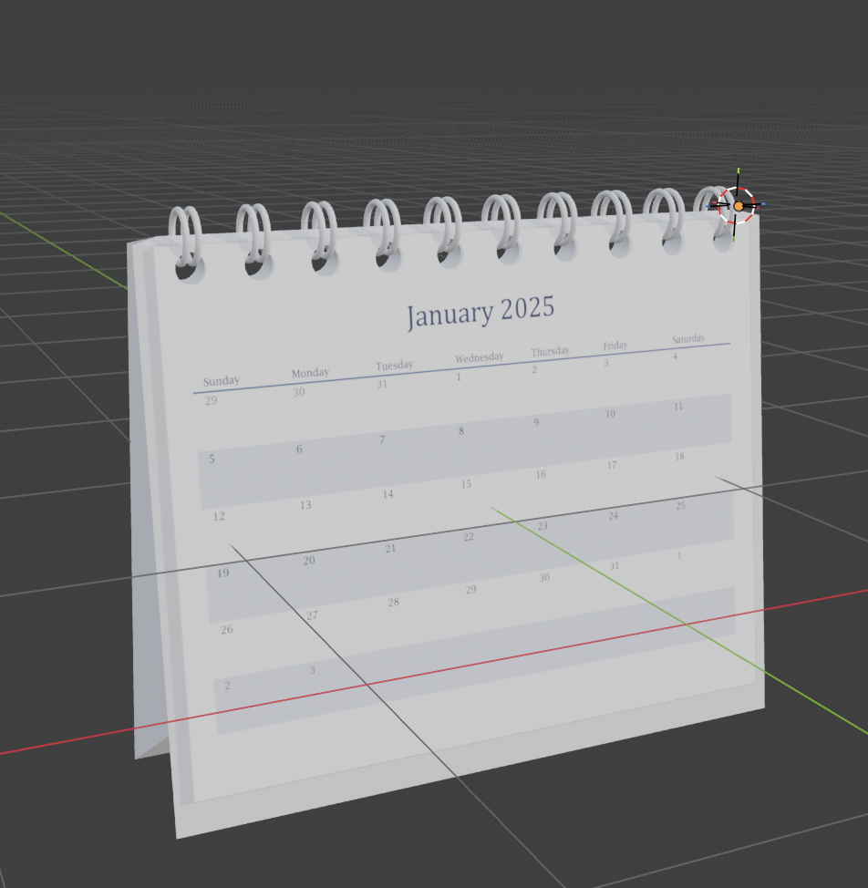
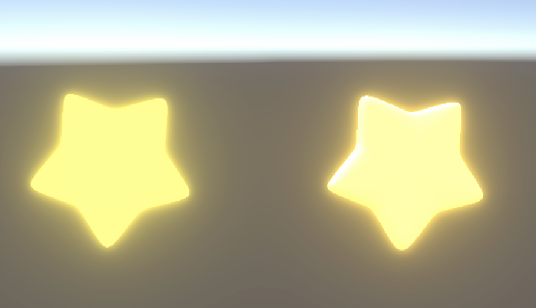
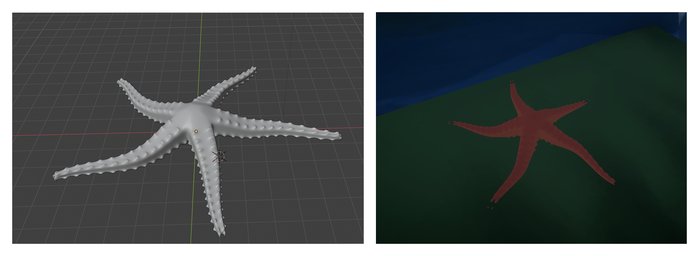
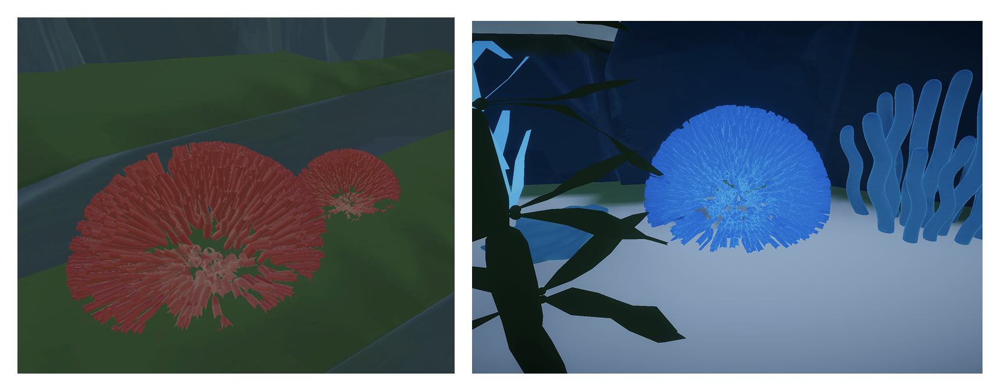
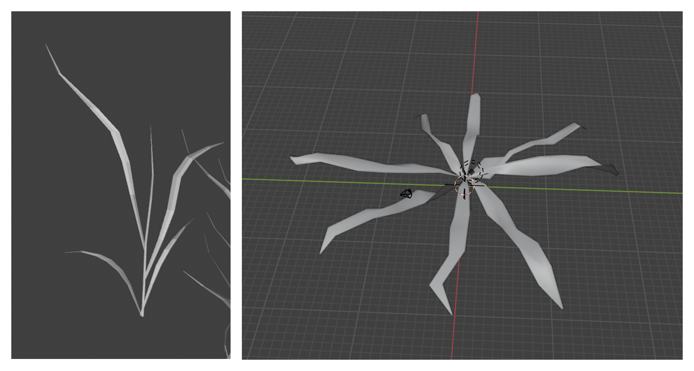
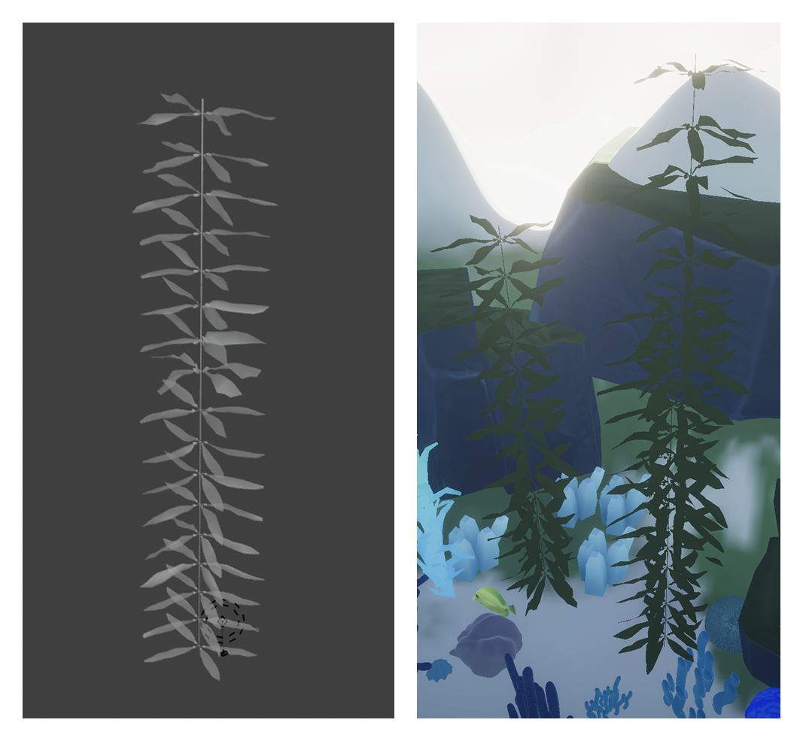
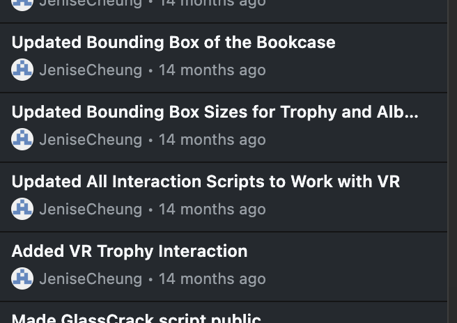
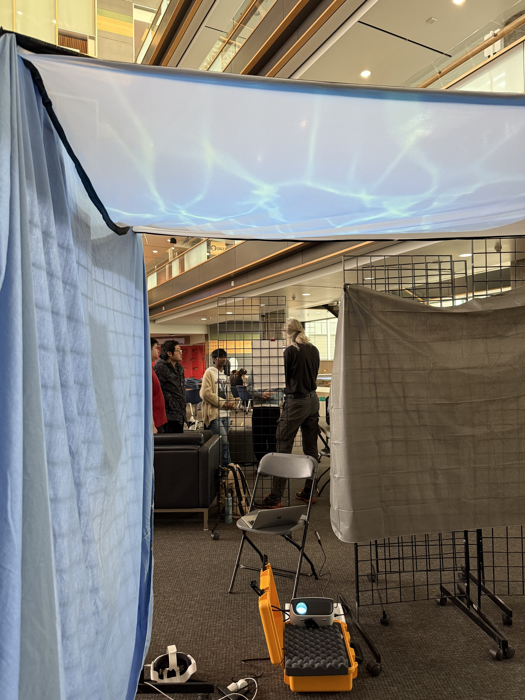

JC
JC


A Flicker of Friendship
Creating a short animation about friendship and connection in a dark forest through a lantern’s journey
Co Project Lead
Artist & Environment Designer
Level Designer
Interaction Developer
3D Modeller
Animator
Playtest Coordinator
Steven Chan
Zynab Fayyad
Judy He
Bea Sia
Academic Project
10 Weeks
Jan. 2025 - Mar. 2025
Figjam
Miro
Unity 3D
Blender
VR headset
C#
is a VR journey about rediscovering lost dreams and embracing who you can still become.
Trapped in a fragile glass house underwater, players must break through the walls of doubt and reconnect with their buried aspirations. As the world opens up, so does a renewed sense of freedom, hope, and self-discovery, empowering players to move forward with confidence.
Drift through a world shaped by your emotions in Currents of the Mind, a VR experience designed to help break free from the belief that you aren't talented enough to achieve your dreams and overcome the fear of taking that first step.
Trapped in a glass house underwater, your self-doubt holds you back as the currents push and pull. As players progress and gain confidence, the players must break through the glass walls, which is a physical representation of their self-doubt. This action symbolizes their ability to confront their own insecurities. As the glass shatters, the players would be allowed to explore the environment more freely and experience a newfound sense of control. The walls begin to crack, and the weight of uncertainty drifts away.
This is more than a journey—it’s a space to breathe, let go, and rediscover your true capabilities.
MOTIVATIONS & GOALS

Ideation Process
We focused on our shared interests, with one of the core themes being the representation of the human mind. We wanted to illustrate how complex the mind is by exploring the hidden and overlooked aspects of ourselves, including beauty, potential, self-discovery, and how far we have come.
We were inspired by the psychological effects of imposter syndrome, specifically how it could hinder personal growth and success. We were also inspired by how VR has been previously used as a tool for cognitive therapy and its potential in addressing mental health challenges.
Our interests centered around emotional healing and self-acceptance.
MOTIVATIONS & GOALS
The goal of this project is to create an emotionally-driven narrative game that explores self-compassion and healing through interactive storytelling and symbolism.
It aims to encourage self-reflection and emotional growth through immersive gameplay, and to challenge the belief that it is “too late” to change careers or forge a new life path.
LEVEL DESIGNING

Stage/ Level Layout
I outlined how users interact with objects in the environment to move the narrative forward. I made sure that each interaction contributes to the story and emotional experience.
The experience allows users to interact with objects accompanied by a voiceover narration that reflects the character’s thoughts and guides them through the journey. The first interaction triggers negative thoughts, while the second interaction with the same object reveals positive narration paired with a transformative visual effect.
I considered the transformative effect of each interaction, making the object transitions big enough for users to feel impactful and empowering, while ensuring they don’t feel underwhelmed or confused.
3D INTERACTION DEVELOPMENT
I used Blender to create underwater elements like starfishs, seaweed, rocks, and coral reefs, as well as other environmental objects like stars and a calendar.
I focused on getting comfortable with Blender’s interface, understanding modifiers, and learning basic modelling techniques like extrusion, sculpting, and subdivision.






3D INTERACTION DEVELOPMENT
I created a wobble effect for the fish by exploring alternative methods of creating animations in Unity that didn't involve keyframes. I used shader graphs and scripts to make the fish feel more alive.
Additionally, I used a script for the seaweed's waving movement.
3D INTERACTION DEVELOPMENT
I handled 3 object interactions in Unity using scripts to provide transformative effects.
My aim is to create a VR experience that is both engaging and immersive, as well as more fun and memorable.
Object Transformations and Their Meanings:
User Testing
I coordinated the playtesting sessions and created a survey on navigation, visuals, immersion, emotions, guidance and locomotion. I focused on design impact, ensuring users aren’t feeling any discomfort and that our experience delivered a positive and meaningful emotional impact and encouraged self reflection.
I made sure each interaction would leave a lasting impression on players. I assisted in fixing bugs and that everything worked smoothly in VR, including adjusting box boundaries so players could interact properly.

Adjustments After Testing
As a result of the experience, users described it as immersive, visually engaging, and thought-provoking. Many felt it encouraged reflection by reminding them that progress does not need to be perfect, and that it is important to keep moving forward, slow down, and take time to appreciate growth.
SUMMARY OF THE EXPERIENCE

Physical Space
Physical Space

Locomotion
Locomotion
Environment & Theme
Interactions/ Character Narrative
This project taught me how environmental design and VR concepts, such as transformation and cognitive dissonance, can create immersion and meaningful emotional impact. Additionally, working on VR interactions pushed me to build new technical skills and become more confident in problem-solving.
Moving forward, I would like to explore environmental storytelling through lighting, sound, and stronger transformation moments to create a more cinematic and emotionally impactful experience.
Creating a short animation about friendship and connection in a dark forest through a lantern’s journey
Developing a game, following a young fish who discovers a mysterious legend that those who complete three trials can ascend into a dragon